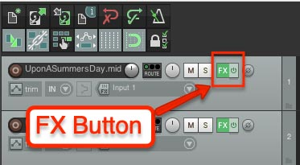
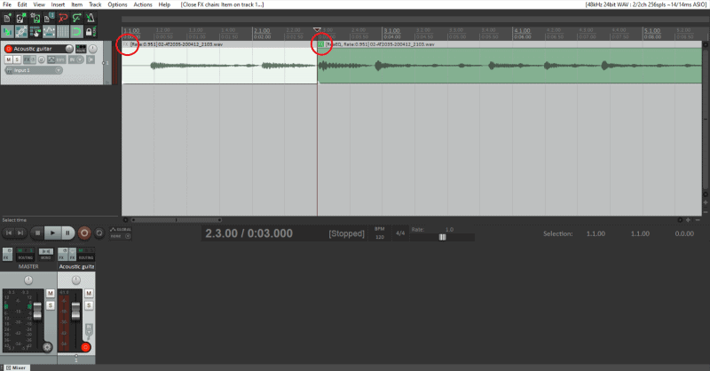

Sound Libraries are online repositories of audio files designed to be used by producers. It can be fun to make your own sounds but sometimes its not realistic to create hundreds or possibly thousands of songs for a single project.
Luckily there are hundreds of royalty-free sound libraries availible that are compatible with many DAWS. These sometimes have different MIDI instruments, sound effects, drum kits and more.
These sound libraries are huge time savers and even if you don't like how a sound fits entirely you can just manipulate the effect until its to your liking.
Here's a list of sound libraries I find useful:
Effects(FX) are a way to change or manipulate audio. There are hundreds of possible effects but the most common ones are:EQ(equalization), compression, reverb, delay and noise reduction.
Virtual instruments like the ones we get from sound libraries, are also considered effects.

The easiest way to apply effects to a track is to click on the "FX" button.
Once you click the button, you'll see your plug-ins and effects.

You normally add effects to the whole track, however it is possible to add effects specifically to items.
Adding an effect through the FX button applies said effect to the whole track. To add an effect:
As I mentioned above, adding an effect will not change the actual audio file at all. The way you apply the effect permanently (called "printing" the effect), you need to render the audo.
To Render a Master Mix of a track, do this:
WAV files tend to be larger as they retain the original audio quality
MP3 files tend to be smaller as they compress the audio to take up less space
Tips: